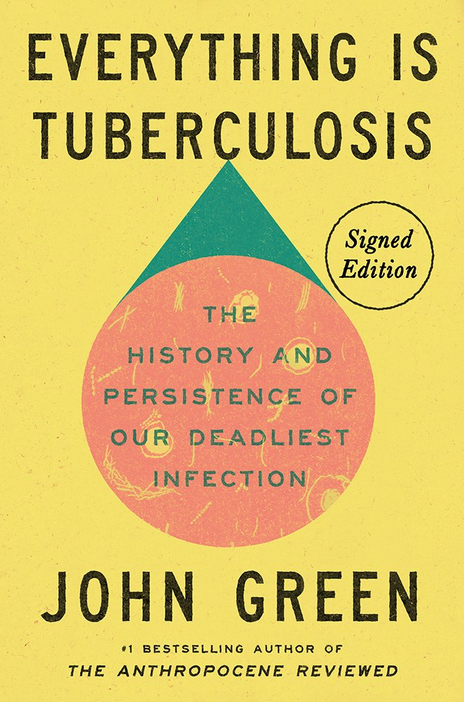
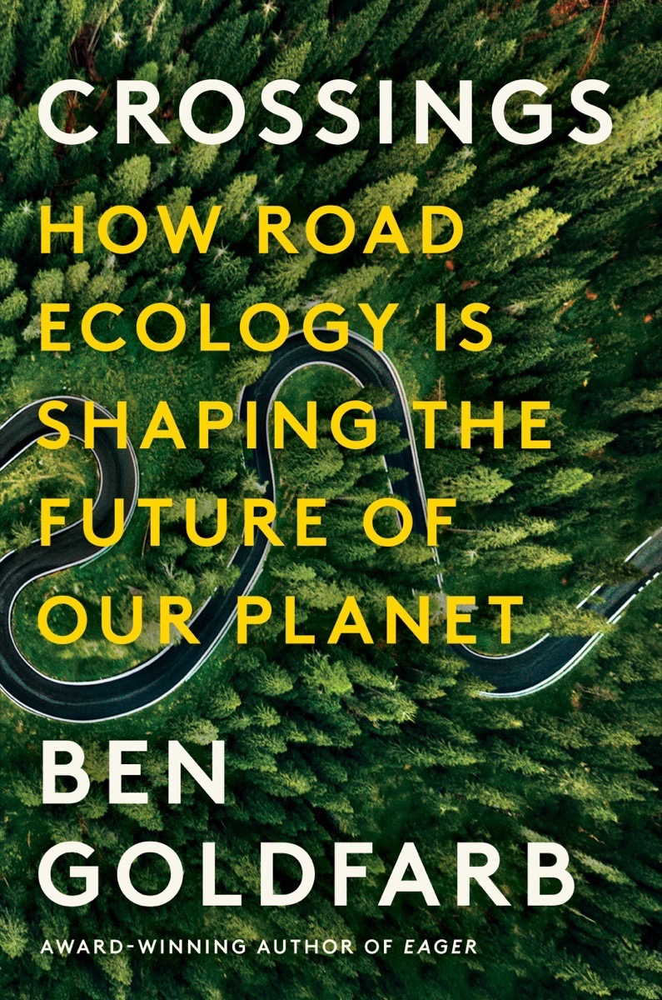
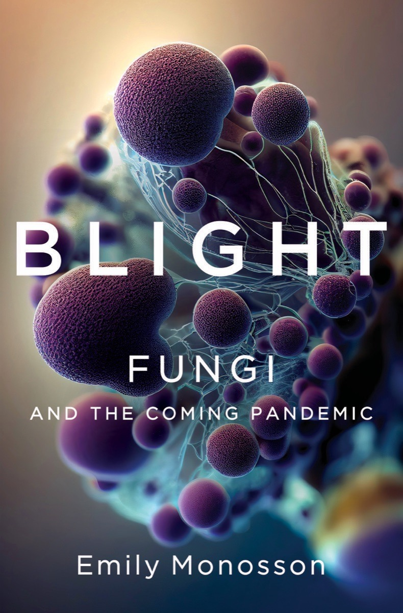

science book dump!
  
Everything is Tuberculosis by John Green
I am a huge fan of John Green as a novelist, as a science YouTuber, and as an activist. This book is a history of tuberculosis, humanity’s most deadly infectious disease for millennia, and how it has shaped human society. John Green writes with compassion, clarity, and optimism about why tuberculosis (a disease we know how to cure!) is still the leading cause of death by infectious disease today, and how we can choose to change that. He also partnered with my favorite science YouTube channel Kurzgesagt to make a video about it.
The scientific hurdles to eradicating tuberculosis are largely solved. What will rid us of tuberculosis is access to quality care for people everywhere in the world. This is not a problem for science to solve, but for society. As Albert Einstein wrote in 1949, “Science, however, cannot create ends and, even less, instill them in human beings; science, at most, can supply the means by which to attain certain ends.” That’s why I believe my responsibility as a scientist extends beyond creating knowledge. I also have a responsibility to ensure that scientific knowledge is used to benefit all people. John Green is the kind of person I aspire to be: a scientist-activist focused on making the world a better place.
Crossings: How Road Ecology is Shaping the Future of Our Planet by Ben Goldfarb
Crossings was an entertaining and fascinating read! It tells the stories of people trying to protect wildlife from becoming roadkill, in a landscape crisscrossed everywhere by roads. Would recommend.
Blight: Fungi and the Coming Pandemic by Emily Monosson
This book was a little terrifying. Fungal diseases have caused catastrophic population decline in other species, from bats to bananas, but we haven’t seen a major fungal pandemic affecting humans. Yet.